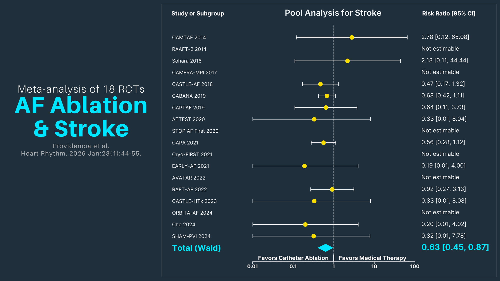
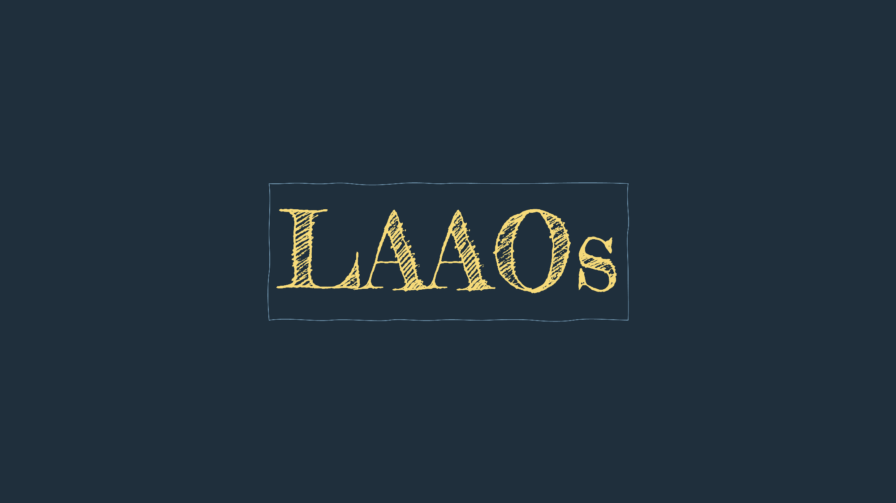

heartRhythmBox
1
DOACs
Carnicelli et al. Circulation. 2022.
Dehbi et al. Lancet 2025.
Kotecha et al. J Am Coll Cardiol. 2018.
❮
❯
2
AF Ablation

Providencia et al. Heart Rhythm. 2026.
Kim et al. JAMA 2025.
Kim et al. ALONE AF. JAMA 2025.
Kimura et al. JAMA Neurol. 2026.
Kimura et al. JAMA Neurol. 2026.
❮
❯
3
LAAO

Kaisaier et al. Heart Rhythm. 2025.
Doshi et al. N Engl J Med. 2026.
Whitlock et al. N Engl J Med 2021.
Galea et al. J Am Coll Cardiol. 2025.
Galea et al. J Am Coll Cardiol. 2025.
Sedaghat et al. Circ Cardiovasc Interv. 2021.
Sedaghat et al. Circ Cardiovasc Interv. 2021.
Sedaghat et al. Circ Cardiovasc Interv. 2021.
Van den Ham et al. J Am Coll Cardiol. 2015.
❮
❯
Caption for Slide 1
4
Bleeding
Doshi et al. N Engl J Med. 2026.
Doshi et al. N Engl J Med. 2026.
Landmesser et al. N Engl J Med. 2026.
Landmesser et al. N Engl J Med. 2026.
Veltkamp et al. Lancet. 2025.
Veltkamp et al. Lancet. 2025.
Veltkamp et al. Lancet. 2025.
❮
❯
Caption for Slide 1

 heartRhythmBox
heartRhythmBox